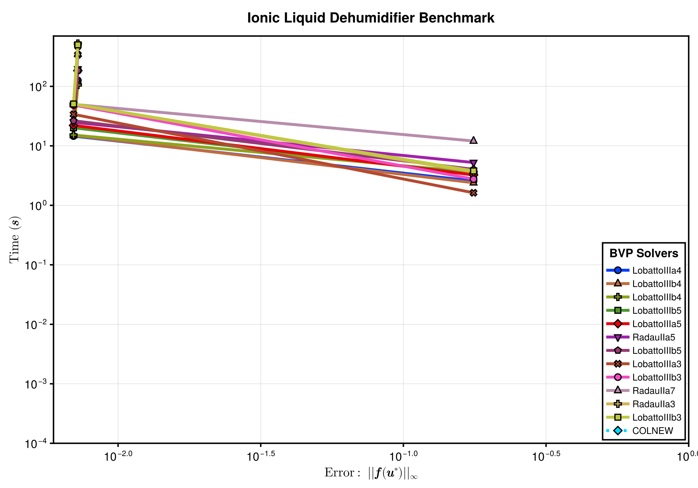

Ionic Liquid Dehumidifier Benchmarks
This benchmark compares the runtime and error of BVP solvers, including FIRK solvers and FORTRAN BVP solvers on ionic liquid dehumidifier problem. For this problem, we test the following solvers:
- BoundaryValueDiffEq.jl's FIRK nested solvers(including
RadauIIa3,RadauIIa5,RadauIIa7,LobattoIIIa3,LobattoIIIa4,LobattoIIIa5,LobattoIIIb3,LobattoIIIb4,LobattoIIIb5,LobattoIIIc3,LobattoIIIc4,LobattoIIIc5). - FORTRAN BVP solvers from ODEInterface.jl(including
BVPM2andCOLNEW).
Setup
Fetch required packages.
using BoundaryValueDiffEq, BracketingNonlinearSolve, ODEInterface, DiffEqDevTools,
BenchmarkTools,
Interpolations, StaticArrays, CairoMakieSet up the benchmarked solvers.
solvers_all = [
(; pkg = :boundaryvaluediffeq,
type = :firk,
name = "RadauIIa3",
solver = Dict(:alg => RadauIIa3(; nested_nlsolve = true), :dts=>1.0 ./
10.0 .^ (2:4))),
(; pkg = :boundaryvaluediffeq,
type = :firk,
name = "RadauIIa5",
solver = Dict(:alg => RadauIIa5(; nested_nlsolve = true), :dts=>1.0 ./
10.0 .^ (2:4))),
(; pkg = :boundaryvaluediffeq,
type = :firk,
name = "RadauIIa7",
solver = Dict(:alg => RadauIIa7(; nested_nlsolve = true), :dts=>1.0 ./
10.0 .^ (2:4))),
(; pkg = :boundaryvaluediffeq,
type = :firk,
name = "LobattoIIIa3",
solver = Dict(:alg => LobattoIIIa3(; nested_nlsolve = true), :dts=>1.0 ./
10.0 .^ (2:4))),
(; pkg = :boundaryvaluediffeq,
type = :firk,
name = "LobattoIIIa4",
solver = Dict(:alg => LobattoIIIa4(; nested_nlsolve = true), :dts=>1.0 ./
10.0 .^ (2:4))),
(; pkg = :boundaryvaluediffeq,
type = :firk,
name = "LobattoIIIa5",
solver = Dict(:alg => LobattoIIIa5(; nested_nlsolve = true), :dts=>1.0 ./
10.0 .^ (2:4))),
(; pkg = :boundaryvaluediffeq,
type = :firk,
name = "LobattoIIIb3",
solver = Dict(:alg => LobattoIIIb3(; nested_nlsolve = true), :dts=>1.0 ./
10.0 .^ (2:4))),
(; pkg = :boundaryvaluediffeq,
type = :firk,
name = "LobattoIIIb4",
solver = Dict(:alg => LobattoIIIb4(; nested_nlsolve = true), :dts=>1.0 ./
10.0 .^ (2:4))),
(; pkg = :boundaryvaluediffeq,
type = :firk,
name = "LobattoIIIb5",
solver = Dict(:alg => LobattoIIIb5(; nested_nlsolve = true), :dts=>1.0 ./
10.0 .^ (2:4))),
(; pkg = :boundaryvaluediffeq,
type = :firk,
name = "LobattoIIIb3",
solver = Dict(:alg => LobattoIIIc3(; nested_nlsolve = true), :dts=>1.0 ./
10.0 .^ (2:4))),
(; pkg = :boundaryvaluediffeq,
type = :firk,
name = "LobattoIIIb4",
solver = Dict(:alg => LobattoIIIc4(; nested_nlsolve = true), :dts=>1.0 ./
10.0 .^ (2:4))),
(; pkg = :boundaryvaluediffeq,
type = :firk,
name = "LobattoIIIb5",
solver = Dict(:alg => LobattoIIIc5(; nested_nlsolve = true), :dts=>1.0 ./
10.0 .^ (2:4))),
(; pkg = :wrapper, type = :general, name = "COLNEW",
solver = Dict(:alg => COLNEW(), :dts=>1.0 ./ 10.0 .^ (2:4)))
];Set tolerances.
abstols = 1.0 ./ 10.0 .^ (1:3)
reltols = 1.0 ./ 10.0 .^ (1:3);Benchmarks
iᵥ_ₛₐₜ(T) = 10^(6.697227966814859 - 273.8702703951898 /
(T + 642.1729733423742))
begin
"Properties Interpolations and Extrapolations"
const Tⁿᵒᵈᵉˢ = @SVector[x + 273.15 for x in [25.0, 35.0, 60.0, 80.0]]
const ξⁿᵒᵈᵉˢ_2 = @SVector[x * 0.01 for x in [0.0, 50.0, 70.0, 80.0, 85.0, 90.0, 95.0]]
const nodes = (Tⁿᵒᵈᵉˢ, ξⁿᵒᵈᵉˢ_2)
const Δh_data = @SMatrix[0.0 -58000.0 -75000.0 -74000.0 -68000.0 -55000.0 -34000.0
0.0 -57000.0 -72000.0 -72000.0 -67000.0 -54000.0 -33000.0
0.0 -52000.0 -67000.0 -67000.0 -62000.0 -51000.0 -31000.0
0.0 -48000.0 -62000.0 -64000.0 -59000.0 -49000.0 -30000.0]
# # ================== Interpolation and Extrapolation P_ν ==================
const a0_p = 12.10
const a1_p = -28.01
const a2_p = 50.34
const a3_p = -24.63
const b0_p = 1212.67
const b1_p = 772.37
const b2_p = 614.59
const b3_p = 493.33
@inline function _Pᵥₐₚₒᵣ_ₛₒₗ(T, ξ)
A = a0_p + a1_p * ξ + a2_p * ξ^2 + a3_p * ξ^3
B = b0_p + b1_p * ξ + b2_p * ξ^2 + b3_p * ξ^3
return 10^(A - B / T) * 100.0
end
# ================== Interpolation and Extrapolation cp ====================
function _cpₛₒₗ(T, ξ)
return ((0.00476 * T - 4.01) * ξ + 4.21) * 1e3
end
@inline function _Δh(T, ξ)
Δh_interpolated = interpolate(nodes, Δh_data, Gridded(Linear()))
Δh_extrapolated = extrapolate(Δh_interpolated, Line())
return Δh_extrapolated(T, ξ)
end
@inline function _iₛₒₗ(T, ξ)
Δh = _Δh(T, ξ)
i = _cpₛₒₗ(T, ξ) * (T - 273.15) + Δh
return i
end
# ================== Find T given i_sol and ξ ====================
# Function to find the root, given i_sol and ξ
@inline function calculate_T_sol(iᵛₛₒₗ, ξ; T_lower = -150.0 + 273.15, T_upper = 95.0 +
273.15)
f(T, p) = _iₛₒₗ(T, p[2]) - p[1]
p = @SVector[iᵛₛₒₗ, ξ]
T_span = (T_lower, T_upper)
prob = IntervalNonlinearProblem{false}(f, T_span, p)
result = solve(prob, BracketingNonlinearSolve.ITP())
return result.u
end
end
function ionic_liquid_coil_ode!(du, u, p, t)
# ωₐᵢᵣ, iₐᵢᵣ, ṁₛₒₗ,ξₛₒₗ, iₛₒₗ = u
# ========================================
Le = p[1]
∂Qᵣ = p[2]
ṁₐᵢᵣ = p[3]
NTUᴰₐᵢᵣ = p[4]
σ = p[5]
ṁₛₒₗ_ᵢₙ = p[6]
ξₛₒₗ_ᵢₙ = p[7]
iₛₒₗ_ᵢₙ = p[8]
ωₐ_ᵢₙ = p[9]
iₐ_ᵢₙ = p[10]
MR = ṁₛₒₗ_ᵢₙ / ṁₐᵢᵣ
ER = iₛₒₗ_ᵢₙ / iₐ_ᵢₙ
# ========================================
Tₛₒₗ = calculate_T_sol(u[5] * iₛₒₗ_ᵢₙ, u[4] * ξₛₒₗ_ᵢₙ)
Pᵥₐₚₒᵣ_ₛₒₗ = _Pᵥₐₚₒᵣ_ₛₒₗ(Tₛₒₗ, u[4] * ξₛₒₗ_ᵢₙ)
ωₑ = 0.622 * Pᵥₐₚₒᵣ_ₛₒₗ / (101325.0 - Pᵥₐₚₒᵣ_ₛₒₗ) / ωₐ_ᵢₙ
iₑ = (1.005 * (Tₛₒₗ - 273.15) + ωₑ * ωₐ_ᵢₙ * (2500.9 + 1.82 * (Tₛₒₗ - 273.15))) / iₐ_ᵢₙ
iₑ *= 1000
iᵥₐₚₒᵣ_ₜₛ = iᵥ_ₛₐₜ(Tₛₒₗ) / iₐ_ᵢₙ
du[1] = σ * NTUᴰₐᵢᵣ * (u[1] - ωₑ)
du[2] = σ * NTUᴰₐᵢᵣ * Le *
((u[2] - iₑ) + (ωₐ_ᵢₙ * iᵥₐₚₒᵣ_ₜₛ * (1 / Le - 1) * (u[1] - ωₑ)))
du[3] = σ * ωₐ_ᵢₙ * du[1] / MR
du[4] = (-u[4] / u[3]) * du[3]
du[5] = (1 / u[3]) *
(σ * (1.0 / (MR * ER)) * du[2] - u[5] * du[3] - ∂Qᵣ / (ṁₛₒₗ_ᵢₙ * iₛₒₗ_ᵢₙ))
nothing
end
function bca!(res_a, u_a, p)
res_a[1] = u_a[3] - 1.0
res_a[2] = u_a[4] - 1.0
res_a[3] = u_a[5] - 1.0
nothing
end
function bcb!(res_b, u_b, p)
res_b[1] = u_b[1] - 1.0
res_b[2] = u_b[2] - 1.0
nothing
end
dt = 0.05
tspan = (0.0, 1.0)
Le = 0.85
σ = 1.0
ṁₛₒₗ_ᵢₙ = 7.466666666666666e-5
ξₛₒₗ_ᵢₙ = 0.8
iₛₒₗ_ᵢₙ = -30235.4128
ωₐ_ᵢₙ = 0.022800264832054707
iₐ_ᵢₙ = 88436.57753410653
∂Qᵣ = -12.416666666666666
ṁₐᵢᵣ_ᵢₙ = 0.0003733333333333333
NTUᴰₐᵢᵣ = 4.678477517542263
p = @SVector[Le, ∂Qᵣ, ṁₐᵢᵣ_ᵢₙ, NTUᴰₐᵢᵣ, σ, ṁₛₒₗ_ᵢₙ, ξₛₒₗ_ᵢₙ, iₛₒₗ_ᵢₙ, ωₐ_ᵢₙ, iₐ_ᵢₙ]
u0 = [0.1, 0.1, 1.0001, 0.9, 1.01]
bvp_fun = BVPFunction(
ionic_liquid_coil_ode!, (bca!, bcb!);
bcresid_prototype = (zeros(3), zeros(2)), twopoint = Val(true)
)
prob = TwoPointBVProblem(bvp_fun, u0, tspan, p)
sol = solve(prob, RadauIIa7(nested_nlsolve = true, nested_nlsolve_kwargs = (; abstol = 1e-3, reltol = 1e-3)), dt = dt, abstol = 1e-5)
testsol = TestSolution(sol)
wp_set = WorkPrecisionSet(prob, abstols, reltols, getfield.(solvers_all, :solver);
names = getfield.(solvers_all, :name), appxsol = testsol, maxiters = Int(1e4))WorkPrecisionSet of 13 wpsPlot the result
fig = begin
LINESTYLES = Dict(:boundaryvaluediffeq => :solid, :simpleboundaryvaluediffeq => :dash, :wrapper => :dot)
ASPECT_RATIO = 0.7
WIDTH = 1200
HEIGHT = round(Int, WIDTH * ASPECT_RATIO)
STROKEWIDTH = 2.5
colors = cgrad(:seaborn_bright, length(solvers_all); categorical = true)
cycle = Cycle([:marker], covary = true)
plot_theme = Theme(Lines = (; cycle), Scatter = (; cycle))
with_theme(plot_theme) do
fig = Figure(; size = (WIDTH, HEIGHT))
ax = Axis(fig[1, 1], ylabel = L"Time $\mathbf{(s)}$",
xlabelsize = 22, ylabelsize = 22,
xlabel = L"Error: $\mathbf{||f(u^\ast)||_\infty}$",
xscale = log10, yscale = log10, xtickwidth = STROKEWIDTH,
ytickwidth = STROKEWIDTH, spinewidth = STROKEWIDTH,
xticklabelsize = 20, yticklabelsize = 20)
idxs = sortperm(median.(getfield.(wp_set.wps, :times)))
ls, scs = [], []
for (i, (wp, solver)) in enumerate(zip(wp_set.wps[idxs], solvers_all[idxs]))
(; name, times, errors) = wp
errors = [err.l∞ for err in errors]
l = lines!(ax, errors, times; linestyle = LINESTYLES[solver.pkg], label = name,
linewidth = 5, color = colors[i])
sc = scatter!(
ax, errors, times; label = name, markersize = 16, strokewidth = 2,
color = colors[i])
push!(ls, l)
push!(scs, sc)
end
xlims!(ax; high = 1)
ylims!(ax; low = 1e-4)
axislegend(ax, [[l, sc] for (l, sc) in zip(ls, scs)],
[solver.name for solver in solvers_all[idxs]], "BVP Solvers";
framevisible = true, framewidth = STROKEWIDTH, position = :rb,
titlesize = 20, labelsize = 16, patchsize = (40.0f0, 20.0f0))
fig[0, :] = Label(fig, "Ionic Liquid Dehumidifier Benchmark",
fontsize = 24, tellwidth = false, font = :bold)
fig
end
end
save("ionic_liquid_dehumidifier.svg", fig)CairoMakie.Screen{SVG}Appendix
These benchmarks are a part of the SciMLBenchmarks.jl repository, found at: https://github.com/SciML/SciMLBenchmarks.jl. For more information on high-performance scientific machine learning, check out the SciML Open Source Software Organization https://sciml.ai.
To locally run this benchmark, do the following commands:
using SciMLBenchmarks
SciMLBenchmarks.weave_file("benchmarks/StiffBVP","ionic_liquid_dehumidifier.jmd")Computer Information:
Julia Version 1.11.9
Commit 53a02c0720c (2026-02-06 00:27 UTC)
Build Info:
Official https://julialang.org/ release
Platform Info:
OS: Linux (x86_64-linux-gnu)
CPU: 128 × AMD EPYC 7502 32-Core Processor
WORD_SIZE: 64
LLVM: libLLVM-16.0.6 (ORCJIT, znver2)
Threads: 128 default, 0 interactive, 64 GC (on 128 virtual cores)
Environment:
JULIA_NUM_THREADS = auto
Package Information:
Status `~/github-runners/amdci3-1/_work/SciMLBenchmarks.jl/SciMLBenchmarks.jl/benchmarks/StiffBVP/Project.toml`
[6e4b80f9] BenchmarkTools v1.8.0
⌃ [764a87c0] BoundaryValueDiffEq v5.23.0
⌃ [70df07ce] BracketingNonlinearSolve v1.12.1
⌃ [13f3f980] CairoMakie v0.15.10
⌃ [f3b72e0c] DiffEqDevTools v3.1.0
⌃ [a98d9a8b] Interpolations v0.16.2
⌃ [54ca160b] ODEInterface v0.5.0
⌃ [31c91b34] SciMLBenchmarks v0.1.3
[90137ffa] StaticArrays v1.9.18
Info Packages marked with ⌃ have new versions available and may be upgradable.And the full manifest:
Status `~/github-runners/amdci3-1/_work/SciMLBenchmarks.jl/SciMLBenchmarks.jl/benchmarks/StiffBVP/Manifest.toml`
⌃ [47edcb42] ADTypes v1.22.0
[621f4979] AbstractFFTs v1.5.0
[1520ce14] AbstractTrees v0.4.5
⌃ [7d9f7c33] Accessors v0.1.44
⌃ [79e6a3ab] Adapt v4.6.0
[35492f91] AdaptivePredicates v1.2.0
[66dad0bd] AliasTables v1.1.3
[a95523ee] AlmostBlockDiagonals v0.1.10
[27a7e980] Animations v0.4.2
⌃ [4fba245c] ArrayInterface v7.25.0
[4c555306] ArrayLayouts v1.12.2
⌃ [67c07d97] Automa v1.1.0
[13072b0f] AxisAlgorithms v1.1.0
[39de3d68] AxisArrays v0.4.8
[aae01518] BandedMatrices v1.11.0
⌃ [18cc8868] BaseDirs v1.3.2
[6e4b80f9] BenchmarkTools v1.8.0
⌃ [764a87c0] BoundaryValueDiffEq v5.23.0
⌃ [7227322d] BoundaryValueDiffEqAscher v1.15.0
⌃ [56b672f2] BoundaryValueDiffEqCore v2.6.0
⌃ [85d9eb09] BoundaryValueDiffEqFIRK v1.17.0
⌃ [1a22d4ce] BoundaryValueDiffEqMIRK v1.17.0
⌃ [9255f1d6] BoundaryValueDiffEqMIRKN v1.16.0
⌃ [ed55bfe0] BoundaryValueDiffEqShooting v1.17.0
⌃ [70df07ce] BracketingNonlinearSolve v1.12.1
[fa961155] CEnum v0.5.0
[96374032] CRlibm v1.0.2
[159f3aea] Cairo v1.1.1
⌃ [13f3f980] CairoMakie v0.15.10
[d360d2e6] ChainRulesCore v1.26.1
[6b39b394] CodecZstd v0.8.7
[a2cac450] ColorBrewer v0.4.2
[35d6a980] ColorSchemes v3.31.0
[3da002f7] ColorTypes v0.12.1
[c3611d14] ColorVectorSpace v0.11.0
[5ae59095] Colors v0.13.1
[861a8166] Combinatorics v1.1.0
⌃ [38540f10] CommonSolve v0.2.6
[bbf7d656] CommonSubexpressions v0.3.1
[34da2185] Compat v4.18.1
[a33af91c] CompositionsBase v0.1.2
⌃ [95dc2771] ComputePipeline v0.1.7
⌃ [2569d6c7] ConcreteStructs v0.2.4
[8f4d0f93] Conda v1.10.3
[187b0558] ConstructionBase v1.6.0
[d38c429a] Contour v0.6.3
[b7a15901] CoreMath v0.1.0
[9a962f9c] DataAPI v1.16.0
⌃ [864edb3b] DataStructures v0.19.4
[e2d170a0] DataValueInterfaces v1.0.0
[927a84f5] DelaunayTriangulation v1.6.6
[8bb1440f] DelimitedFiles v1.9.1
⌃ [2b5f629d] DiffEqBase v7.5.0
⌃ [f3b72e0c] DiffEqDevTools v3.1.0
⌃ [77a26b50] DiffEqNoiseProcess v5.31.1
[163ba53b] DiffResults v1.1.0
⌃ [b552c78f] DiffRules v1.15.1
⌃ [a0c0ee7d] DifferentiationInterface v0.7.18
[b4f34e82] Distances v0.10.12
⌃ [31c24e10] Distributions v0.25.125
[ffbed154] DocStringExtensions v0.9.5
[4e289a0a] EnumX v1.0.7
⌃ [f151be2c] EnzymeCore v0.8.20
[429591f6] ExactPredicates v2.2.9
⌃ [e2ba6199] ExprTools v0.1.10
[411431e0] Extents v0.1.6
[b86e33f2] FFTA v0.3.1
⌃ [9d29842c] FastAlmostBandedMatrices v0.1.6
⌃ [7034ab61] FastBroadcast v1.3.2
[9aa1b823] FastClosures v0.3.2
⌃ [a4df4552] FastPower v1.3.1
⌃ [5789e2e9] FileIO v1.19.0
[8fc22ac5] FilePaths v0.9.0
[48062228] FilePathsBase v0.9.24
⌃ [1a297f60] FillArrays v1.16.0
⌃ [6a86dc24] FiniteDiff v2.31.0
⌅ [53c48c17] FixedPointNumbers v0.8.5
[1fa38f19] Format v1.3.7
⌃ [f6369f11] ForwardDiff v1.3.3
[b38be410] FreeType v4.1.1
[663a7486] FreeTypeAbstraction v0.10.8
[069b7b12] FunctionWrappers v1.1.3
⌃ [77dc65aa] FunctionWrappersWrappers v1.8.0
[46192b85] GPUArraysCore v0.2.0
⌃ [5c1252a2] GeometryBasics v0.5.10
[d7ba0133] Git v1.5.0
[a2bd30eb] Graphics v1.1.3
[3955a311] GridLayoutBase v0.11.2
[42e2da0e] Grisu v1.0.2
[19dc6840] HCubature v1.8.0
⌅ [eafb193a] Highlights v0.5.3
⌃ [34004b35] HypergeometricFunctions v0.3.28
[7073ff75] IJulia v1.34.4
[2803e5a7] ImageAxes v0.6.12
[c817782e] ImageBase v0.1.7
[a09fc81d] ImageCore v0.10.5
[82e4d734] ImageIO v0.6.9
[bc367c6b] ImageMetadata v0.9.10
[9b13fd28] IndirectArrays v1.0.0
[d25df0c9] Inflate v0.1.5
⌃ [18e54dd8] IntegerMathUtils v0.1.3
⌃ [de52edbc] Integrals v5.4.1
⌃ [a98d9a8b] Interpolations v0.16.2
⌃ [d1acc4aa] IntervalArithmetic v1.0.9
[8197267c] IntervalSets v0.7.14
[3587e190] InverseFunctions v0.1.17
[92d709cd] IrrationalConstants v0.2.6
[f1662d9f] Isoband v0.1.1
[c8e1da08] IterTools v1.10.0
[82899510] IteratorInterfaceExtensions v1.0.0
[692b3bcd] JLLWrappers v1.8.0
⌅ [682c06a0] JSON v0.21.4
[b835a17e] JpegTurbo v0.1.6
⌃ [5ab0869b] KernelDensity v0.6.11
⌃ [ba0b0d4f] Krylov v0.10.6
[b964fa9f] LaTeXStrings v1.4.0
⌃ [23fbe1c1] Latexify v0.16.10
[73f95e8e] LatticeRules v0.0.1
⌃ [5078a376] LazyArrays v2.9.7
[8cdb02fc] LazyModules v0.3.1
⌃ [87fe0de2] LineSearch v0.1.9
⌃ [d3d80556] LineSearches v7.5.1
⌅ [7ed4a6bd] LinearSolve v3.80.0
⌅ [2ab3a3ac] LogExpFunctions v0.3.29
[e6f89c97] LoggingExtras v1.2.0
[1914dd2f] MacroTools v0.5.16
⌅ [ee78f7c6] Makie v0.24.10
[dbb5928d] MappedArrays v0.4.3
⌃ [0a4f8689] MathTeXEngine v0.6.7
[a3b82374] MatrixFactorizations v3.1.3
⌃ [bb5d69b7] MaybeInplace v0.1.4
[e1d29d7a] Missings v1.2.0
[4886b29c] MonteCarloIntegration v0.2.0
[e94cdb99] MosaicViews v0.3.4
⌃ [46d2c3a1] MuladdMacro v0.2.4
[ffc61752] Mustache v1.0.21
⌅ [d41bc354] NLSolversBase v7.10.0
[2774e3e8] NLsolve v4.5.1
⌃ [77ba4419] NaNMath v1.1.3
[f09324ee] Netpbm v1.1.1
⌃ [be0214bd] NonlinearSolveBase v2.26.0
⌃ [5959db7a] NonlinearSolveFirstOrder v2.1.1
⌃ [54ca160b] ODEInterface v0.5.0
[510215fc] Observables v0.5.5
[6fe1bfb0] OffsetArrays v1.17.0
[52e1d378] OpenEXR v0.3.3
⌃ [bca83a33] OptimizationBase v5.1.3
⌅ [bac558e1] OrderedCollections v1.8.1
⌃ [bbf590c4] OrdinaryDiffEqCore v4.2.1
⌃ [b1df2697] OrdinaryDiffEqTsit5 v2.0.1
⌃ [90014a1f] PDMats v0.11.37
⌃ [f57f5aa1] PNGFiles v0.4.4
[19eb6ba3] Packing v0.5.1
[5432bcbf] PaddedViews v0.5.12
⌃ [69de0a69] Parsers v2.8.4
[eebad327] PkgVersion v0.3.3
[995b91a9] PlotUtils v1.4.4
⌃ [e409e4f3] PoissonRandom v0.4.8
[647866c9] PolygonOps v0.1.2
⌃ [d236fae5] PreallocationTools v1.2.0
⌅ [aea7be01] PrecompileTools v1.2.1
[21216c6a] Preferences v1.5.2
[27ebfcd6] Primes v0.5.7
[92933f4c] ProgressMeter v1.11.0
[43287f4e] PtrArrays v1.4.0
[4b34888f] QOI v1.0.2
[1fd47b50] QuadGK v2.11.3
⌃ [8a4e6c94] QuasiMonteCarlo v0.3.5
[b3c3ace0] RangeArrays v0.3.2
[c84ed2f1] Ratios v0.4.5
[3cdcf5f2] RecipesBase v1.3.4
⌃ [731186ca] RecursiveArrayTools v4.3.0
[189a3867] Reexport v1.2.2
[05181044] RelocatableFolders v1.0.1
[ae029012] Requires v1.3.1
⌃ [ae5879a3] ResettableStacks v1.2.0
[79098fc4] Rmath v0.9.0
⌃ [47965b36] RootedTrees v2.25.0
[5eaf0fd0] RoundingEmulator v0.2.1
⌃ [7e49a35a] RuntimeGeneratedFunctions v0.5.19
[fdea26ae] SIMD v3.7.2
[1bc83da4] SafeTestsets v0.1.0
⌃ [0bca4576] SciMLBase v3.13.0
⌃ [31c91b34] SciMLBenchmarks v0.1.3
⌃ [19f34311] SciMLJacobianOperators v0.1.13
⌅ [a6db7da4] SciMLLogging v1.10.1
⌃ [c0aeaf25] SciMLOperators v1.21.0
⌃ [431bcebd] SciMLPublic v1.0.1
⌃ [53ae85a6] SciMLStructures v1.10.0
[6c6a2e73] Scratch v1.3.0
[efcf1570] Setfield v1.1.2
[65257c39] ShaderAbstractions v0.5.0
[992d4aef] Showoff v1.0.3
[73760f76] SignedDistanceFields v0.4.1
[699a6c99] SimpleTraits v0.9.6
[45858cf5] Sixel v0.1.5
[ed01d8cd] Sobol v1.5.0
⌃ [a2af1166] SortingAlgorithms v1.2.2
⌃ [9f842d2f] SparseConnectivityTracer v1.2.1
[0a514795] SparseMatrixColorings v0.4.27
⌃ [276daf66] SpecialFunctions v2.7.2
[860ef19b] StableRNGs v1.0.4
[cae243ae] StackViews v0.1.2
[90137ffa] StaticArrays v1.9.18
[1e83bf80] StaticArraysCore v1.4.4
[10745b16] Statistics v1.11.1
[82ae8749] StatsAPI v1.8.0
⌃ [2913bbd2] StatsBase v0.34.10
⌅ [4c63d2b9] StatsFuns v1.5.2
[69024149] StringEncodings v0.3.7
[09ab397b] StructArrays v0.7.3
⌃ [2efcf032] SymbolicIndexingInterface v0.3.48
[3783bdb8] TableTraits v1.0.1
⌃ [bd369af6] Tables v1.12.1
[62fd8b95] TensorCore v0.1.1
[731e570b] TiffImages v0.11.9
⌅ [a759f4b9] TimerOutputs v0.5.29
[3bb67fe8] TranscodingStreams v0.11.3
[981d1d27] TriplotBase v0.1.0
[781d530d] TruncatedStacktraces v1.4.0
[1cfade01] UnicodeFun v0.4.1
[1986cc42] Unitful v1.28.0
[81def892] VersionParsing v1.3.0
[44d3d7a6] Weave v0.10.12
[e3aaa7dc] WebP v0.1.3
[efce3f68] WoodburyMatrices v1.1.0
[ddb6d928] YAML v0.4.16
[c2297ded] ZMQ v1.5.1
[6e34b625] Bzip2_jll v1.0.9+0
[4e9b3aee] CRlibm_jll v1.0.1+0
[83423d85] Cairo_jll v1.18.7+0
[a38c48d9] CoreMath_jll v0.1.0+0
[5ae413db] EarCut_jll v2.2.4+0
⌃ [2e619515] Expat_jll v2.8.0+0
⌃ [b22a6f82] FFMPEG_jll v8.1.0+0
[a3f928ae] Fontconfig_jll v2.17.1+0
[d7e528f0] FreeType2_jll v2.14.3+1
[559328eb] FriBidi_jll v1.0.17+0
⌅ [b0724c58] GettextRuntime_jll v0.22.4+0
[61579ee1] Ghostscript_jll v9.55.1+0
[59f7168a] Giflib_jll v5.2.3+0
[020c3dae] Git_LFS_jll v3.7.1+0
[f8c6e375] Git_jll v2.54.0+0
[7746bdde] Glib_jll v2.86.3+0
⌃ [3b182d85] Graphite2_jll v1.3.15+0
⌅ [2e76f6c2] HarfBuzz_jll v8.5.1+0
[905a6f67] Imath_jll v3.2.2+0
[1d5cc7b8] IntelOpenMP_jll v2025.2.0+0
⌃ [aacddb02] JpegTurbo_jll v3.1.5+0
[c1c5ebd0] LAME_jll v3.100.3+0
[88015f11] LERC_jll v4.1.0+0
⌃ [1d63c593] LLVMOpenMP_jll v18.1.8+0
⌅ [e9f186c6] Libffi_jll v3.4.7+0
[7e76a0d4] Libglvnd_jll v1.7.1+1
[94ce4f54] Libiconv_jll v1.18.0+0
[4b2f31a3] Libmount_jll v2.42.0+0
⌃ [89763e89] Libtiff_jll v4.7.2+0
[38a345b3] Libuuid_jll v2.42.0+0
[856f044c] MKL_jll v2025.2.0+0
[c771fb93] ODEInterface_jll v0.0.2+0
[e7412a2a] Ogg_jll v1.3.6+0
⌃ [6cdc7f73] OpenBLASConsistentFPCSR_jll v0.3.33+0
⌃ [18a262bb] OpenEXR_jll v3.4.9+0
⌃ [9bd350c2] OpenSSH_jll v10.3.1+0
⌃ [458c3c95] OpenSSL_jll v3.5.6+0
[efe28fd5] OpenSpecFun_jll v0.5.6+0
[91d4177d] Opus_jll v1.6.1+0
[36c8627f] Pango_jll v1.57.1+0
[30392449] Pixman_jll v0.46.4+0
[f50d1b31] Rmath_jll v0.5.1+0
[ffd25f8a] XZ_jll v5.8.3+0
[4f6342f7] Xorg_libX11_jll v1.8.13+0
[0c0b7dd1] Xorg_libXau_jll v1.0.13+0
[a3789734] Xorg_libXdmcp_jll v1.1.6+0
[1082639a] Xorg_libXext_jll v1.3.8+0
[d091e8ba] Xorg_libXfixes_jll v6.0.2+0
[ea2f1a96] Xorg_libXrender_jll v0.9.12+0
[a65dc6b1] Xorg_libpciaccess_jll v0.19.0+0
[c7cfdc94] Xorg_libxcb_jll v1.17.1+0
[c5fb5394] Xorg_xtrans_jll v1.6.0+0
[8f1865be] ZeroMQ_jll v4.3.6+0
[3161d3a3] Zstd_jll v1.5.7+1
[9a68df92] isoband_jll v0.2.3+0
[a4ae2306] libaom_jll v3.13.3+0
[0ac62f75] libass_jll v0.17.4+0
⌃ [8e53e030] libdrm_jll v2.4.125+1
[f638f0a6] libfdk_aac_jll v2.0.4+0
[b53b4c65] libpng_jll v1.6.58+0
[075b6546] libsixel_jll v1.10.5+0
[a9144af2] libsodium_jll v1.0.21+0
[9a156e7d] libva_jll v2.23.0+0
[f27f6e37] libvorbis_jll v1.3.8+0
[c5f90fcd] libwebp_jll v1.6.0+0
[1317d2d5] oneTBB_jll v2022.3.0+0
⌅ [1270edf5] x264_jll v10164.0.1+0
[dfaa095f] x265_jll v4.1.0+0
[0dad84c5] ArgTools v1.1.2
[56f22d72] Artifacts v1.11.0
[2a0f44e3] Base64 v1.11.0
[8bf52ea8] CRC32c v1.11.0
[ade2ca70] Dates v1.11.0
[8ba89e20] Distributed v1.11.0
[f43a241f] Downloads v1.6.0
[7b1f6079] FileWatching v1.11.0
[9fa8497b] Future v1.11.0
[b77e0a4c] InteractiveUtils v1.11.0
[4af54fe1] LazyArtifacts v1.11.0
[b27032c2] LibCURL v0.6.4
[76f85450] LibGit2 v1.11.0
[8f399da3] Libdl v1.11.0
[37e2e46d] LinearAlgebra v1.11.0
[56ddb016] Logging v1.11.0
[d6f4376e] Markdown v1.11.0
[a63ad114] Mmap v1.11.0
[ca575930] NetworkOptions v1.2.0
[44cfe95a] Pkg v1.11.0
[de0858da] Printf v1.11.0
[9abbd945] Profile v1.11.0
[3fa0cd96] REPL v1.11.0
[9a3f8284] Random v1.11.0
[ea8e919c] SHA v0.7.0
[9e88b42a] Serialization v1.11.0
[1a1011a3] SharedArrays v1.11.0
[6462fe0b] Sockets v1.11.0
[2f01184e] SparseArrays v1.11.0
[f489334b] StyledStrings v1.11.0
[4607b0f0] SuiteSparse
[fa267f1f] TOML v1.0.3
[a4e569a6] Tar v1.10.0
[cf7118a7] UUIDs v1.11.0
[4ec0a83e] Unicode v1.11.0
[e66e0078] CompilerSupportLibraries_jll v1.1.1+0
[deac9b47] LibCURL_jll v8.6.0+0
[e37daf67] LibGit2_jll v1.7.2+0
[29816b5a] LibSSH2_jll v1.11.0+1
[c8ffd9c3] MbedTLS_jll v2.28.6+0
[14a3606d] MozillaCACerts_jll v2023.12.12
[4536629a] OpenBLAS_jll v0.3.27+1
[05823500] OpenLibm_jll v0.8.5+0
[efcefdf7] PCRE2_jll v10.42.0+1
[bea87d4a] SuiteSparse_jll v7.7.0+0
[83775a58] Zlib_jll v1.2.13+1
[8e850b90] libblastrampoline_jll v5.11.0+0
[8e850ede] nghttp2_jll v1.59.0+0
[3f19e933] p7zip_jll v17.4.0+2
Info Packages marked with ⌃ and ⌅ have new versions available. Those with ⌃ may be upgradable, but those with ⌅ are restricted by compatibility constraints from upgrading. To see why use `status --outdated -m`